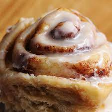

Cinnamon Rolls

Description
I present to you, my all time favorite pastry. It can be made overnight or early in the morning for same day enjoyment. Any leftover extras can be frozen, saving extras for a later date!
Ingredients
Dough:
- 3/4 cup of warm (110°F) milk
- 1 egg and 1 egg yolk, both at room temperature
- 2 and 1/4 teaspoons (1/4 oz package) of active yeast
- 1/4 cup of granulated sugar
- 1/4 cup of melted butter
- 3 cups of bread flour, plus extra for dusting
- 3/4 teaspoon of salt
Cinnamon Filling:
- 2/3 cup of brown sugar (dark or light works)
- 1 and 1/2 tablespoons of ground cinnamon
- 1/4 cup of softened butter
Cream Cheese Icing:
- 4 oz of softened cream cheese
- 3 tablespoons of softened butter
- 3/4 cup of powdered sugar
- 1/2 teaspoon of vanilla extract
Steps
- Safely warm milk to 110°F, then transfer to a bowl once temperature is reached. Sprinkle active yeast on top of milk, followed by sugar, egg, egg yolk, and melted butter. Mix all ingredients in bowl, preferably with an electric mixer, until everything is well combined. Then, add in flour and salt until dough begins to form.
- Knead dough until a somewhat sticky ball is formed, which may take about 10 minutes if done by hand or roughly 8 minutes by electric mixer on medium speed. If dough continues to be too sticky, add 1 tablespoon of bread flour until proper consistency is reached.
- Moderately oil the inside of a medium to large size bowl, move the dough into, and cover the bowl with a plastic wrap. Allow the dough to rise for 1 and 1/2 hours or until the dough has doubled in size.
- Once the dough has reached its proper size, transfer it onto a floured surface and begin rolling it out into a 14x9 inch rectangle. Then spread the softened butter over the dough.
- In a small bowl, mix the cinnamon and brown sugar together and sprinkle it over the buttered dough before rubbing it in.
- Begin tightly rolling the dough from the short side, and place the seam down to ensure the edges are sealed. The ends can be cut off if there does not seem to be enough cinnamon mixture present.
- Using floss or a knife, preferably serrated, cut the dough into 1 inch sections. Place sections into a parchment paper lined-and-greased 9x9 inch baking pan. Cover pan with a plastic wrap and let the rolls rise for 30 to 45 minutes.
- Preheat oven to 350°F, remove plastic wrap, and place the cinnamon rolls in for 20 to 25 minutes. Once rolls are slightly golden brown around the edges, remove them from the oven and allow them to cool for 10 minutes before applying the icing.
- In a seperate bowl, mix the cream cheese, butter, powdered sugar, and vanilla extract until the consistency is smooth and fluffy.
- Spread icing over the cinnamon rolls and enjoy the fruits of your labor!